How to Ballon
Hvor skal jeg begynde?
Ballonprojektet er en stor og tidskrævende opgave, så når man stiller spørgsmålet “Hvor skal min gruppe og jeg egentlig begynde og hvordan begynder vi?”, er der et simpelt svar. Du og din gruppe skal begynde med at læse opgaveformuleringen og herved dens krav grundigt igennem, da den skal være grundlaget for jeres projekt gennem hele arbejdsperioden. Når du har læst og forstået opgaveformuleringen og dens krav, skal du og din gruppe prøve at danne et overblik over, hvad projektet skal indeholde, såsom dokumentation, opgaveanalyse, osv. Det vil derudover også være en rigtig god idé, at lave en ressourceplanlægning, da det danner overblik og giver en fornemmelse for, hvor langt man er nået.
Så hvordan begynder man, spørger du. Det er altid en god idé at starte i god tid, da man så ikke vil komme til at stresse lige før afleveringsfristen. Men for at komme godt i gang med projektet, vil vi råde dig til at, bare sige “let’s do this” og springe ud i det. Start med at lav et fælles dokument, som for eksempel, Google Docs, Word Online eller noget tredje, og del derefter dokumentet med din gruppe. Nu kan i begynde at sætte dokumentet op som en skabelon for hele opgaven, i kan jo altid fjerne eller tilføje punkter. Hvad dette gør er igen at give et godt overblik over projektet, det er jo trods alt et tværfagligt projekt, så det er nemt at tabe overblik. Nu kan I bare begynde at skrive. Hvis i løber helt tør for i idéer af opbygningen, kan I eventuelt se Tips og Tricks til ballonprojektet, som er råd vi fandt brugbare efter erfaring.
Tips og Tricks til ballonprojektet
Nedenstående ses de tips og tricks vi fandt brugbare under arbejdsprocessen i punktform.
- For formler fra Matematik og Fysik til ballonen, se vores emne Nyttige formler, som findes længere nede i vejledningen.
- Det er en god strategi, at lave en hierarkisk opstilling af
overskrifter, med dette menes at hovedoverskrifterne,
heriblandt ‘opgave analyse’ og ‘dokumentation’
, for eksempel har nummer 1 og 2. Her har
underoverskrifterne så, hovedoverskriftens nummer komma 1,
2, 3, osv. Kommer til at se således ud: Husk på, at
dette er blot et eksempel.
- Opgaveanalyse
- Problemstilling
- Givne oplysninger
- Hvad skal der undersøges
- Dokumentation
- Beregning af ballon
- Banelængder
- Banebredder
- Produktudvikling
- Analyse
- Design
- Beregning af ballon
- Vurdering af resultat
- Diskussion
- Konklusion
- Opgaveanalyse
- Når I skal konstruere jeres ballon, er det vigtigt at I alle hele tiden arbejder under processen, da det er et krav at ballonen skal være færdigbygget når konstruktions perioden er ovre. Hvis I bliver meget før færdig med konstruktionen, kan I jo altid skrive videre på dokumentet.
- Gode værktøjer til illustrationer/billeder, kan være
følgende programmer:
- Blender: 3D illustrationer, kræver lidt tålmodighed, da man først skal lære at bruge det.
- Geogebra: 2D illustrationer, CAS-værktøj, fungerer godt til illustrering af funktioner, samt polygoner.
- Kamera/mobilkamera: Dokumenterrende billeder. Hellere for mange billeder end for få.
- Under beregningen af ballonen er det vigtigt at I hele gruppen, beregner for at eliminere så mange fejl som muligt , dette er også den bedste måde for jer alle at lære alle temaerne under projektet. Derudover skal I huske at illustrationer/billeder er mere end velkommen at have med i opgaven. Det kan være illustrationer af, hvor i ballonen i regner, som for eksempel, er I ved at beregne banebredde, kan i eventuelt lave en illustration, se figur 1. Men husk at have mål indsat på illustrationen.
Nyttige formler
Vi vil ikke give i direkte guide til at udregne oplysninger på ballonen, da det ville være at lave alt dit arbejde. Vi har dog tænkt os at give dig en formelsamling som indeholder alle de nyttige formler for både Matematik og Fysik.
Matematik
| Trigonometri | |
| Sinus, cosinus, tagens $$\sin v = \frac{modstående katete}{hypotenusen}$$ $$\cos v = \frac{hosliggende katete}{hypotenusen}$$ $$\tan v = \frac{modstående katete}{hosliggende katete}$$ | 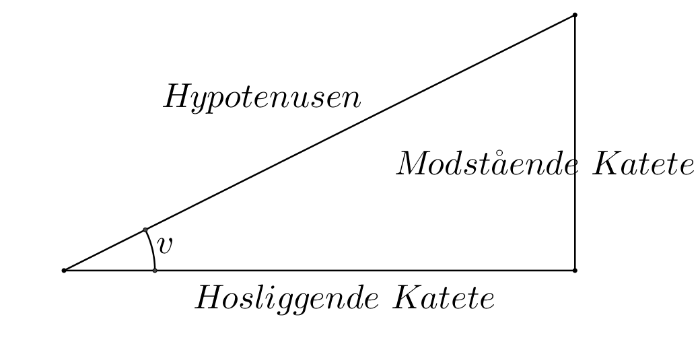 |
| Pythagoras’ læresætning $$a^2+b^2=c^2$$ | 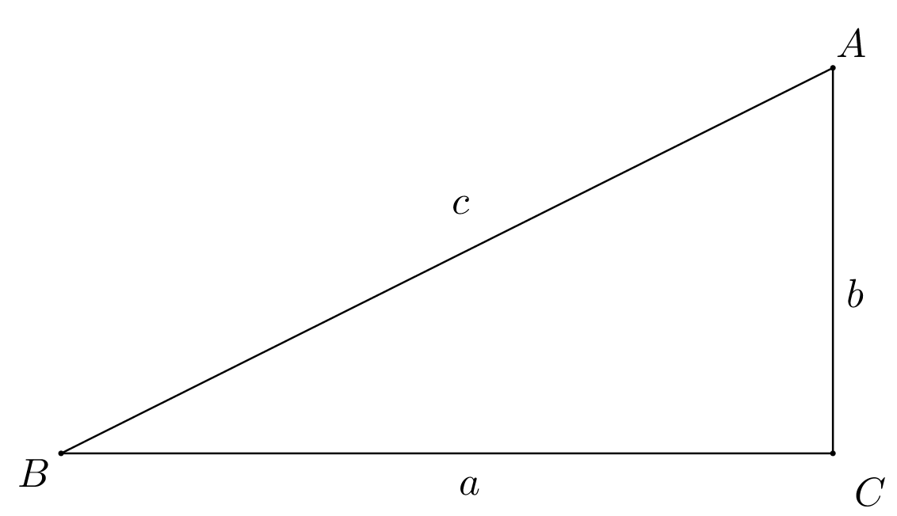 |
| Cirkel | |
| Omkreds $$O=\pi*d=2*\pi*r$$ | 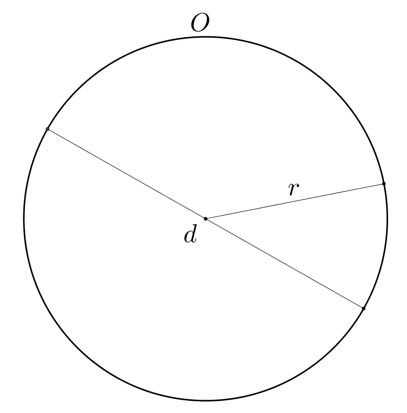 |
| Buelængder $$b=\frac{2*\pi*r}{360°}*v$$ Bruges til at udregne banelængde på ballon | 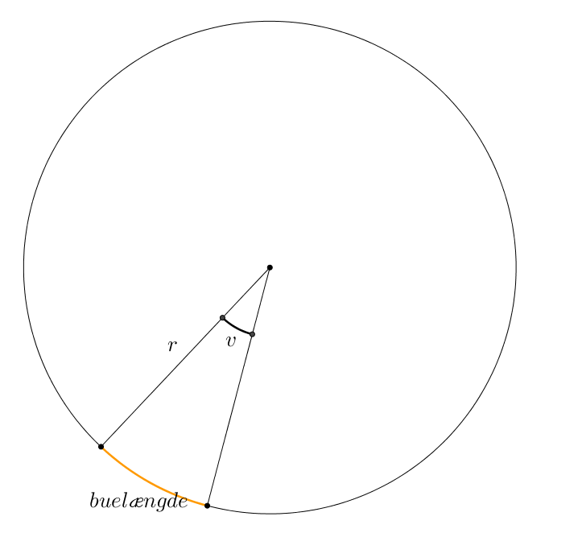 |
| Overflader | |
| Den krumme overflade af en keglestub $$A=\pi*s*(R+r)$$ | 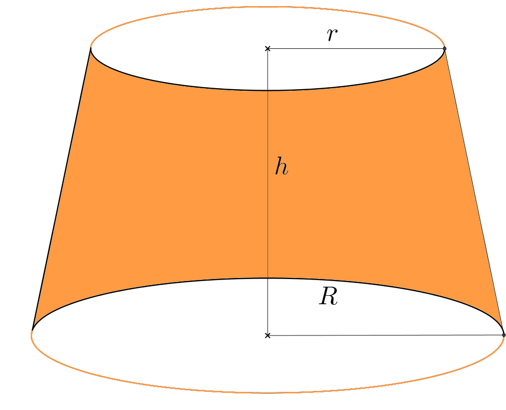 |
| Den krumme overflade af en kuglekalot $$A=\pi*d*h$$ $$A=\pi*(a^2+h^2)$$ | 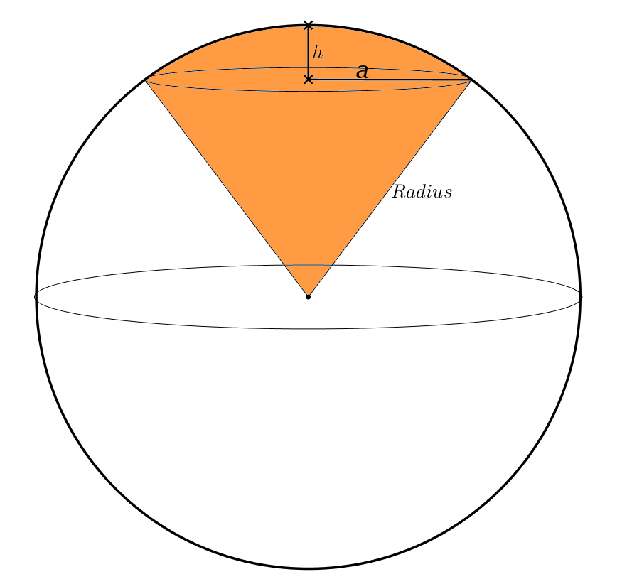 |
| Rumfang | |
| Keglestub $$V=\frac{\pi}{3}*h*(R^2+r^2+R*r)$$ | 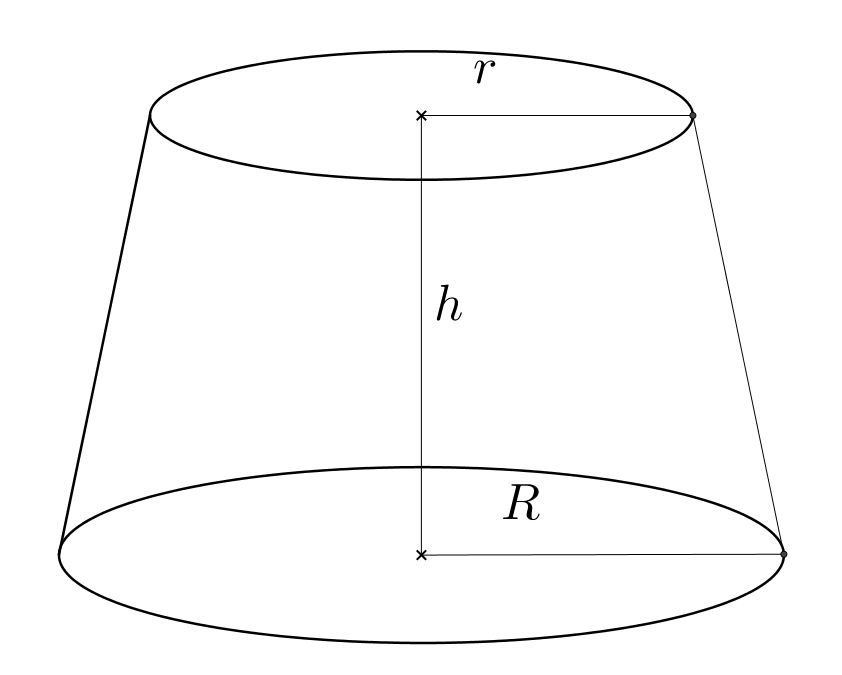 |
| Kugleafsnit $$V=\frac{\pi}{6}*h^2*(3d-2h)$$ $$V=\frac{\pi}{6}*h*(3*a^2+h^2)$$ | 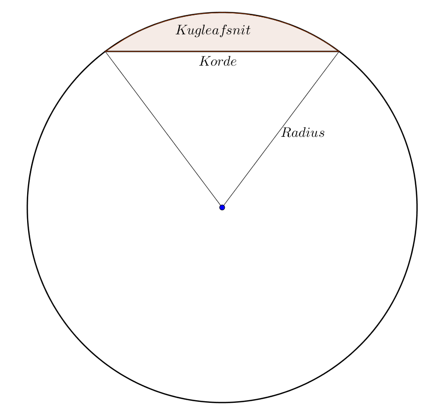 |
| Andet | |
| Radianer og grader $$1\ radian = \frac{180°}{\pi}$$ $$1°=\frac{\pi}{180°}$$ |
Fysik & Kemi
| Kræfter og bevægelse | ||
| Isaac Newtons anden lov $$F_{res}=m*a$$ | 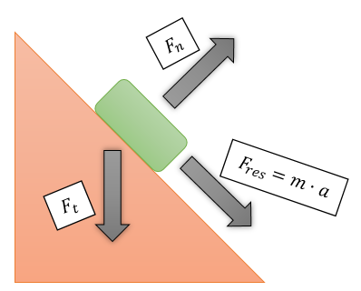 | |
| Tyngdekraft $$F_{tyngde}=m*g$$ Tyngdeacceleration $$g=9,82\ \frac{m}{s^2}$$ | 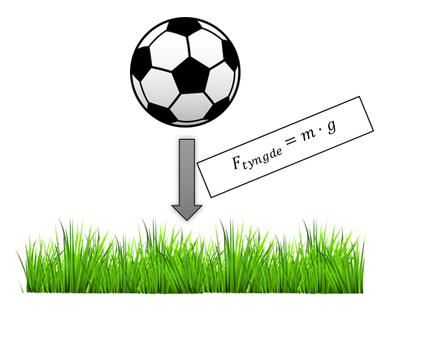 | |
| Idealgasloven $$P*V=n*R*T$$ Gaskonstanten $$R=8,31\ \frac{Pa*m^3}{mol*K}$$ | ||
| Stedfunktionen for bevægelse med konstant acceleration $$s=\frac{1}{2}*a*t^2$$ $$s=\frac{1}{2}*a*t^2+v_0*t+s_0$$ | ||
| Energi og Effekt | ||
| Effekt (energi over tid) $$P=\frac{E}{T}$$ | ||
| Varmetilførelse $$Q=m*c*ΔT$$ $$c=specifik varmekapacitet$$ | ||
| Transmissionstabseffekt $$P=konstant*ΔT$$ | 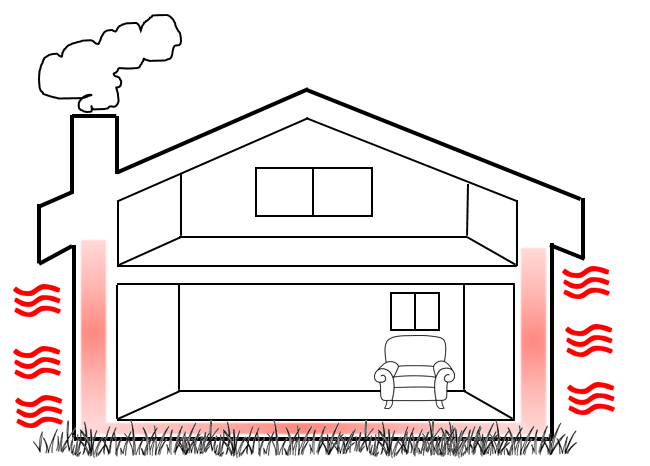 | |
| Andet | ||
| Densitet $$ρ=\frac{m}{V}$$ | ||
| Molæresammenhænge (mængde beregning) $$n=\frac{m}{M}$$ $$m=M*n$$ $$M=\frac{m}{n}$$ | 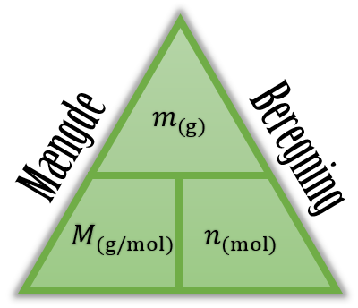 | |
| Brændværdi $$Q=\frac{E}{m}$$ | ||
| Symboler og enheder (SI-enheder) | ||
| Masse [m] | Kilogram | $$kg$$ |
| Acceleration [a] | $$\frac{meter}{sekunder^2}$$ | $$\frac{m}{s^2}$$ |
| Kraft [F] | Newton | $$N$$ |
|
Energi [E] Varmeenergi [Q] |
Joule | $$J$$ |
| Effekt [P] | Watt | $$W$$ |
| Tryk [P] | Pascal | $$Pa$$ |
| Volume [V] | $$meter^3$$ | $$m^3$$ |
| Stofmængde [n] | Mol | $$mol$$ |
| Temperatur [T] | Kelvin | $$K$$ |
| Tid [t] | Sekunder | $$s$$ |
| Strækning/længde [s] | Meter | $$m$$ |
| Molarmasse [M] | $$\frac{gram}{Mol}$$ | $$\frac{g}{mol}$$ |
| Specifik varmekapacitet [c] | $$\frac{Joules}{Kilogram*Kelvin}$$ | $$\frac{J}{kg*K}$$ |
| Brændværdi [Q] | $$\frac{Megajoules}{Kilogram}$$ | $$\frac{MJ}{kg}$$ |